Rules Unveiled
Chapter 2: 2025-2026 Game Rule Analysis
Rules & Strategy Math
Subject: Mix & Match Game Manual
Researchers: All Mech Dreamers members
Big Finding: The Beam is a score multiplier!
Our Strategy Manifesto:
Know yourself and your enemy, and you will never be defeated!
Use the Beam wisely to win!
2.1 What Kind of Game is This?
Looking at the thick game manual made our heads spin. But when we watched the videos, we found out this game is super fun!

Robots in legal starting positions during a Teamwork Match
The game is called Mix & Match. We use our robots to pick up different colored Pins and long Beams, stack them into tall towers, and place them in special Goals.
Match Modes:
1. Teamwork Challenge: Two robots team up for 60 seconds to get the highest score possible!
2. Robot Skills Challenge:
One robot on the field alone! There are two types: Driving Skills (remote control) and Autonomous Skills (the robot moves on its own with code).
2.2 Treasures on the Field: Pins
We touched and studied everything on the field and found some secrets!
1. Pin
This is the basic item, like a little mushroom. They come in Red, Blue, and Orange.
Yingjun's Finding:
"Look! They have grooves on top and bumps on the bottom, so they can be stacked one by one! But they're so slippery. We should add rubber bands to our claws, or we'll definitely drop them."
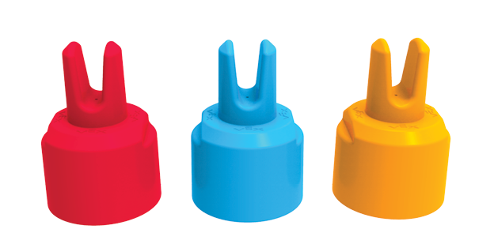
Quantity: Most are Orange, but there are also Red and Blue ones. we need to collect them like precious gems!
2.2 Treasures on the Field: Beams
2. Beam
A long gray bar with many holes in it.
Xiaomi's Observation:
"Oh my gosh, it's so heavy! and long! If our robot doesn't have a good center of gravity, it'll definitely tip over. It's going to be hard to handle."
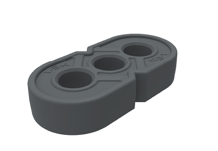
2.2 Treasures on the Field: Goals
3. Goals
There are 5 Goals on the floor and one tall Standoff Goal in the middle.
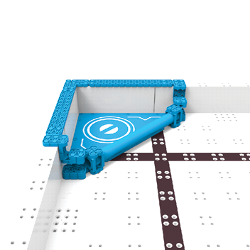
Triangle Goals: Red and Blue. In the corners. Can hold up to 3 Stacks.
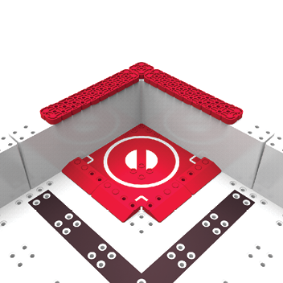
Square Goals: Red and Blue. Can hold 1 Stack.
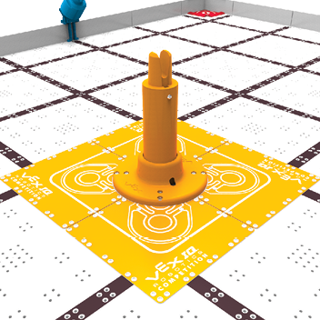
Floor Goal: The center area with white cicles is Orange. Can hold 4 Stacks.
Standoff Goal: The pillar in the middle is also Orange!
Yuanbao's Reminder: "Watch the colors! You only get points if you put Red Pins in Red Goals. Since the Floor Goal and Standoff Goal are Orange, you get matching points for putting Orange Pins at the bottom!"
2.3 How Big Can the Robot Be?
We measured the starting box very carefully. If we're even a tiny bit too big, we can't even play!
Size Limit <R5>
At the start of the match, the robot must fit in a small space:
11" x 20" x 15"
(279.4mm x 508mm x 381.0mm)
Yingjun:
"That's so small! 15 inches high isn't enough to reach the Standoff Goal! The pole is almost 12 inches high, plus the Pins. How can I fit a lift in there?"
Expansion Magic <SG3>
Xiaomi pointed to the rules and shouted: "Look! After the match starts, infinite vertical expansion!"
Everyone: Yay! That means we can make a "Giraffe Robot" that grows tall once the game begins!
2.4 How to Feed the Robot
In this game, we can be Loaders and feed Pins to our robot.
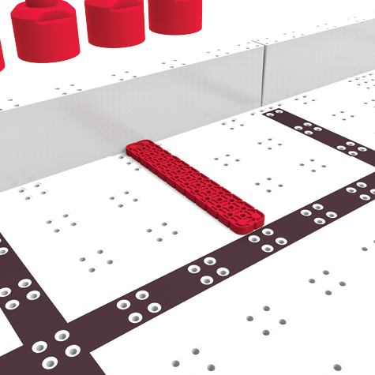
<SG6> Rules:
1. One by one! No handfuls.
2. Place it gently and let it stop before the robot takes it.
3. It must touch the Red or Blue bar when placed.
If we're too fast or the robot grabs it too soon, the judge will warn us. We need to practice our timing!
2.5 How to Get High Scores?
Yuanbao is our "mathematician," and he helped us calculate the scores.
- Connected Pins <SC3>: +1 point. That's just basic work.
- Connected Beam <SC3>: +10 points. Huge money! We must get this!
- 2-Color Match <SC4>: +5 points. Not bad.
- 3-Color Match <SC4>: +15 points. Super bonus! We must stack all 3 colors!
And there are more Bonuses!
- Matching Bonus <SC6>: +10 points. Red in Red, Blue in Blue.
- Standoff Bonus <SC5>: +10 points. For hanging items on the middle tower.
- Cleared Stake <SC7>: +2 points. For removing Pins from starting stakes.
- Contact Bonus <SC8>: +2 points. For touching items at the end.
Yuanbao's Finding:
If we just stack one color, 10 Pins only get 10 points.
But if we make a "Perfect Stack" (3 colors + Color Matching), that's 3 + 15 + 10 = 28 points!
Quality is better than quantity!
2.5.1 The Secret of Color Matching
We studied the Matching Goal Bonus <SC6>. A Stack gets 10 extra points if:
- The bottom Pin matches the Goal color.
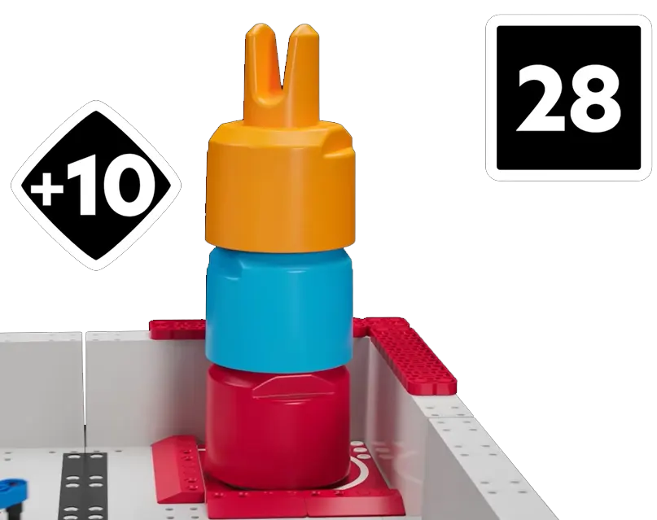
- The Stack is connected to a Beam (doesn't matter where it's placed!).
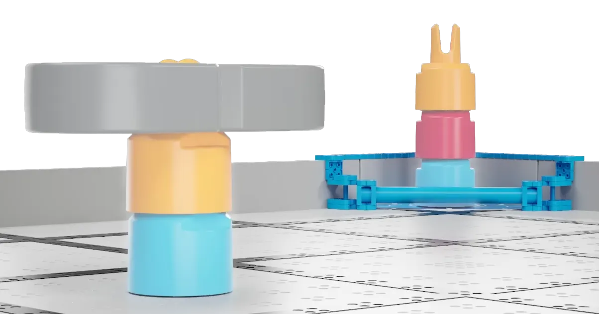
Note: Each Stack can only get the matching bonus once. If it's on a Beam, you don't need to match the floor color too.
2.5.2 Don't Get Penalized!
1. What is "Connected"? <SC3>
To be "Connected," a Pin must:
- Be fully 'nested' in another scoring item.
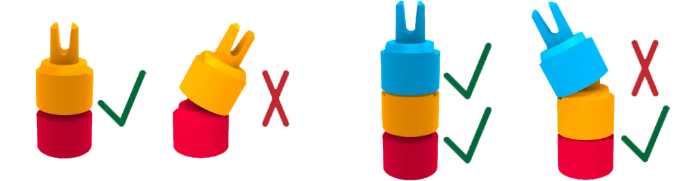
- Not be touching the robot!
- Be "mostly vertical." If a stack falls over, it's 0 points!
2. Contact Bonus <SC8>
At the end, you can get 2 points if the robot is touching items:
- Touching two or more items at once.
- Touching an item that is nested in other items.
But don't touch a good stack just for 2 points! If the robot touches a stack, the connection points are gone, which is much worse!
2.5.3 Scoring Challenge
We practiced with these 10 examples from the manual!
| Example |
Image |
Score Details |
| <SE1> |
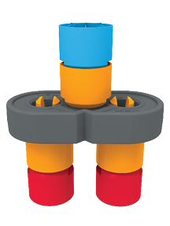
|
Everything connected. 6 Pins + 1 Beam + 3x 3-color bonus + 3x Matching.
Total: 91 points |
| <SE2> |
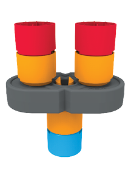
|
Same as above. All connected.
Total: 91 points |
| <SE3> |
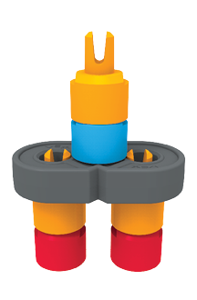
|
Top stack is crooked and not connected. Only the bottom counts.
4 Pins + 1 Beam + 2x 3-color + 2x Matching.
Total: 64 points |
| <SE4> |
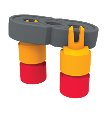
|
Beam is not connected! Only Pins are together. No Matching bonus.
4 Pins + 0 Beams + 2x 2-color stack.
Total: 14 points |
| <SE5> |
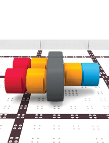
|
Everything fell over. Not vertical.
Total: 0 points |
2.5.3 Scoring Challenge (Continued)
| Example |
Image |
Score Details |
| <SE6> |
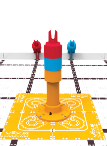
|
Pins connected in matching Goal, and on Standoff.
3 Pins + 3-color stack + Matching + Standoff.
Total: 38 points |
| <SE7> |
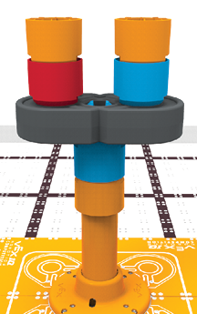
|
Perfect! Beam on Standoff, Pins on Beam.
Beam creates 3 independent stacks, all bonuses count!
Total: 121 points
|
| <SE8> |
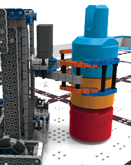
|
Robot touched the stack! All connection points are void.
Only contact bonus.
Total: 2 points |
| <SE9> |
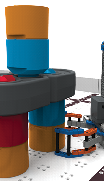
|
Robot touched the bottom right stack. That one is void, but others count.
Total: 66 points |
| <SE10> |
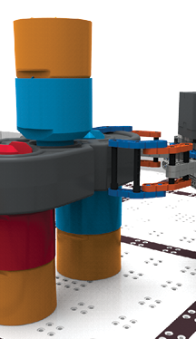
|
Robot touched the Beam. Everything connected to it is void.
Only contact bonus.
Total: 2 points |
2.6 Teamwork Challenge: The Scary Switch
Xiaomi is most worried about this rule as a driver. You must switch drivers between 35s and 25s.
"What happens if we're late?"
Teacher Wang says: "Disqualification! 0 points for that match!"
Our Plan:
- Watch the timer. At 35s, signal "Switch!"
- Stop immediately, even if you're about to score.
- Hands off the controller so the robot stops completely.
2.7 Special Rules for Skills Challenge
Skills matches are a bit different.
- Red Zone Only: Robot must start in the Red Triangle.
- Loading Limit: Only use the Red Load Zone. Blue is off-limits!
This means our autonomous code must return to the red zone, or we need a "big belly" robot to carry lots of pins at once.
Rule <RSC7>: No touching the controller during Autonomous. We must stand still like statues!
If the robot gets stuck, we can request a reset <RSC5>, but we lose any items it's holding. We need stable code!
2.8 Design Constraints Summary
Based on these rules, our design team has these "Must-Haves":
- Must be foldable: Start in a 15-inch tall box.
- Must grab Beams: Easy Matching bonuses.
- Must lift high: For Standoff bonuses.
2.9 Our Tactical Practice
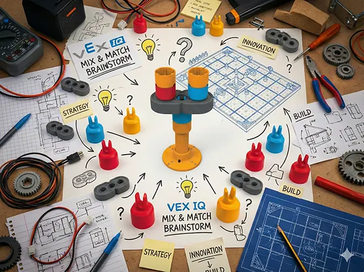
This is our brainstorming core! We imagined four different playstyles:
- Strategy A: Low & Fast
- Strategy B: Tower Builder
- Strategy C: Beam Strategist
- Strategy D: High Stake Grail
Strategy A: Low & Fast
Idea: Xiaomi suggested a super fast robot that focuses on floor goals and ignores the tower.
Goal: Fill the Red/Blue Triangles, Squares, and the Floor Goal with 3-color stacks.
🧮 Score Draft
Assuming we make 8 3-color stacks:
One Stack:
3 Pins (3) + 3-color (15) + Matching (10) = 28 points
Total:
Stack points: 8 x 28 = 224 points
Cleared stakes: 4 x 2 = 8 points
Contact: 2 points
Estimated Total: 234 points
Strategy A Evaluation
Pros: Simple robot, low center of gravity, fast, won't tip over.
Cons: Requires perfect driving. Skipping the Beam's 10 points is a waste.
Strategy B: Tower Builder
Idea: Items on the Standoff Goal get 10 extra points.
Goal: Like Strategy A, but put one Orange 3-color stack on the Standoff Goal. No Beams used.
🧮 Score Draft
10 more points than Strategy A.
Estimated Total: 244 points
Strategy B Evaluation
Lifting 3 Pins that high is hard for only 10 extra points. Let's look at Beams for more points!
Strategy C: Beam Strategist
Idea: Beams give 10 points and automatic Matching bonuses for connected stacks.
Goal: Build two "Trophy Stacks" (Pins on a Beam) and some floor stacks.
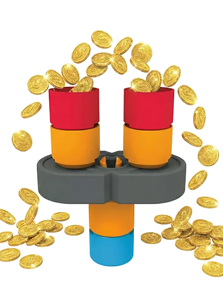
Strategy C: Detailed Math
🧮 Score Draft
One Trophy Stack:
Pins (6) + Beam (10) + 3-color (3*15) + Matching (3*10) = 91 points
One 3-color Stack: 28 points
Total:
Floor stacks: 2 x 28 = 56
Trophy stacks: 2 x 91 = 182
Cleared: 8 + Contact: 2
Estimated Total: 248 points
Strategy C Evaluation
Easier than matching colors on the floor, but the score isn't much higher. Let's try putting the Beam on the tower!
Strategy D: High Stake Grail
Idea: A "Trophy Stack" on the Standoff Goal gets 3x Standoff bonuses (30 points extra!).
Goal: Put a full Trophy Stack on the Standoff Goal.
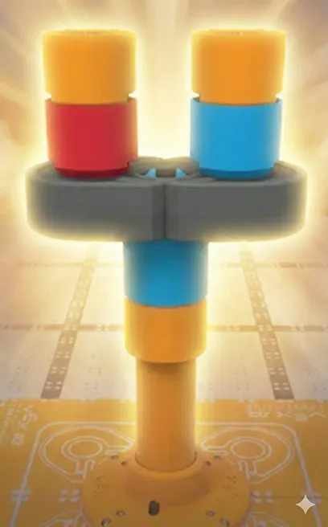
🧮 Score Draft
Strategy C plus 30 points for the Standoff bonus.
Estimated Total: 278 points
Strategy D: Evaluation
278 points is 30 points higher than Strategy C! Conquering the tower is worth it.
Pros
Huge score potential. Very competitive for winning matches.
Cons
Very difficult technically. The robot needs:
- A long lift arm that can handle the heavy Beam.
- Precise positioning to hook the Beam on the Standoff Goal.
- Great balance to avoid tipping.
Yingjun: "This is like weightlifting for the robot! It needs a strong 'core'!"
Final Strategy Decision
We voted and chose Strategy D: High Stake Grail as our main development path!
Our Conclusion:
It's hard, but it's the best way to win. We accept the challenge! Everything we do next will be about achieving the "High Stake Grail."
Let's do it!
Starting next chapter, we'll turn this dream into reality with our robot design!
Chapter 2 Summary: Right Direction!
Studying the rules was so worth it!
Without this, we might have built a simple robot that just pushes things around. Now we know:
- Beams are vital: They are score multipliers.
- The Tower is the game-changer: It makes our score fly!
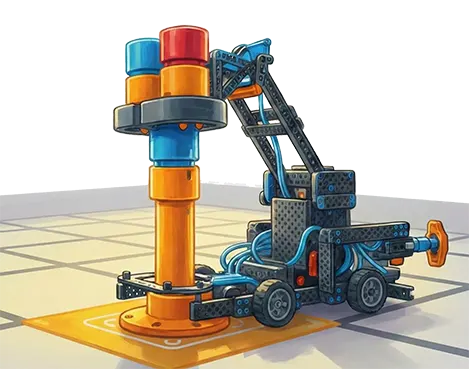
Appendix: My Rule Cheat Sheet
SC3: Connected = Vertical + Not touching robot
SC6: Matching Goal = Color to color
Beam: 10 pts + Auto Matching + Multi-color bonus!
RSC3: Skills = Red start + Red loading
GG11: Switch time = 35s - 25s
R5: Start size = 11 x 20 x 15 inch
SG3: Vertical Expansion = Infinite!